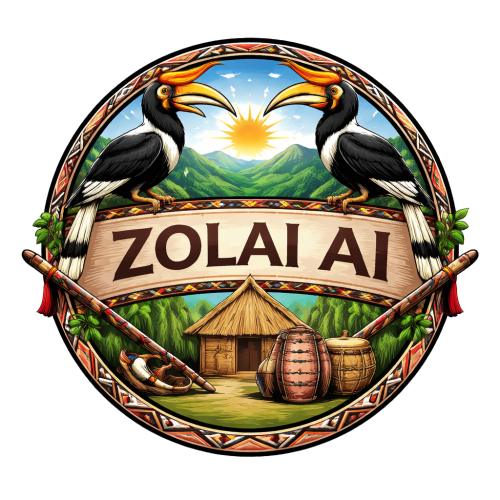

A bilingual (Tedim Zolai ⇄ English) AI toolkit for the Zomi people. We digitize, standardize, and preserve Zolai under the ZVS 2018 orthography — a RAG-first knowledge brain, open learner platform, and offline desktop app.